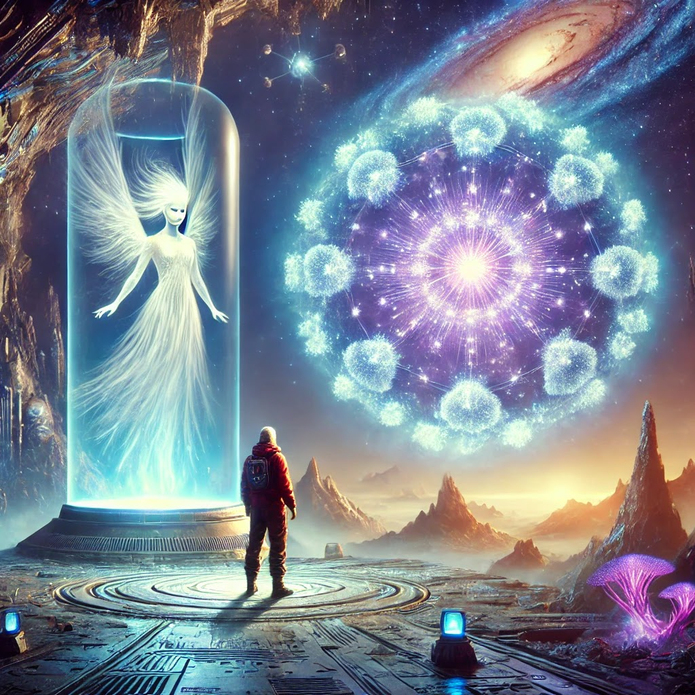

Publicado em 2025-01-30 13:56:00
Capítulo 1: O Chamado
Ziko Gonçalves, um renomado explorador e cientista, sempre foi movido por uma inquietação que o acompanhava desde a infância. Fascinado pelas estrelas, ele sonhava com o dia em que poderia explorar os confins do cosmos e desvendar os mistérios que se escondiam além do alcance da ciência humana. Desde os tempos de sua juventude, quando começou a estudar física quântica e astronomia, Ziko sabia que havia algo mais — algo muito maior do que a humanidade poderia compreender. A Terra parecia pequena demais para conter todo o conhecimento que ele almejava.
Ziko trabalhava incansavelmente em um projeto secreto da Agência Espacial Internacional, um plano audacioso que visava explorar uma galáxia distante, onde, segundo algumas teorias, poderia existir vida inteligente. Ele se tornou o líder da missão que estava sendo preparada para ir além das fronteiras conhecidas. A nave que ele pilotaria, chamada Eternum, foi projetada para atravessar o espaço intergaláctico, uma viagem que levaria anos, talvez séculos, para ser concluída.
O momento da partida chegou, e Ziko estava a bordo da Eternum, pronto para uma jornada que poderia mudar para sempre o destino da humanidade. Enquanto olhava pela janela da nave, as estrelas pareciam distantes e frias, mas, para ele, cada uma delas representava uma possibilidade infinita de conhecimento. A missão era simples, ou ao menos parecia ser: encontrar sinais de vida inteligente em um planeta desconhecido, situado em uma galáxia no limite do espaço explorado.
Capítulo 2: O Encontro com Zulaia
Após meses de viagem através do espaço intergaláctico, a Eternum chegou ao seu destino: o planeta M51-ULS-1b. O planeta estava em uma zona habitável, orbitando uma estrela distante, com condições que indicavam que poderia ter abrigado uma civilização avançada. Quando Ziko e sua equipe aterrissaram, a paisagem que se desenhou diante deles era ao mesmo tempo majestosa e desconcertante. Ruínas de uma antiga cidade, feitas de cristal e estruturas que desafiavam as leis da física, cobriam o horizonte.
Mas, logo, Ziko percebeu que não estava sozinho. Algo o observava.
Em meio às ruínas, uma figura apareceu diante dele. Seus cabelos pareciam ser feitos de luz, e seus olhos eram profundos, como o abismo do espaço. A figura não era humana. Ziko a reconheceu imediatamente: ela era uma guardiã, uma entidade que transcende as limitações da forma física. Ela era Zulaia, a última descendente de uma civilização que habitara aquele planeta muito antes de qualquer forma de vida humana existir.
Zulaia se aproximou de Ziko com uma suavidade que parecia desafiadora para o próprio espaço-tempo. Ela não caminhava, mas flutuava, como se sua presença fosse uma manifestação do próprio tecido do cosmos. Seus olhos brilham com uma sabedoria que Ziko nunca imaginou ser possível.
“Você é o explorador que veio até aqui em busca de respostas”, disse Zulaia com uma voz que parecia vir de todas as direções ao mesmo tempo. “Mas as respostas que você procura não estão apenas fora de você, elas estão dentro de você.”
Ziko, atônito, não conseguia processar completamente o que estava acontecendo. Como podia uma entidade tão antiga e poderosa falar com ele dessa maneira? Mas Zulaia não esperava uma resposta. Ela simplesmente o guiou até o centro das ruínas, onde algo muito maior estava prestes a ser revelado.
Capítulo 3: O Coração do Cosmos
Zulaia levou Ziko até uma câmara no centro das ruínas, uma estrutura de cristal que brilhava com a luz de mil estrelas. No centro dessa câmara, havia uma esfera de energia pura que flutuava no ar, emanando uma vibração quase palpável.
“Esta é a essência do planeta”, explicou Zulaia. “Aqui, todas as memórias da nossa civilização estão armazenadas. Aqui, a verdadeira natureza do universo pode ser compreendida.”
Ziko observou a esfera com reverência. Era como se o próprio espaço-tempo estivesse concentrado naquele único ponto, pulsando com uma energia que fazia seu corpo vibrar em sintonia com o cosmos. Quando ele se aproximou, a esfera liberou uma onda de conhecimento que inundou sua mente.
Ele viu imagens de civilizações antigas, formas de vida que existiam há bilhões de anos, antes da própria Terra surgir. Viu como essas civilizações haviam atingido um nível de evolução que transcendia a física e a biologia. Eles haviam compreendido a verdadeira natureza da realidade, mas, infelizmente, sua busca por poder e controle os levou à autodestruição. A sabedoria que deixaram para trás era, no entanto, eterna.
Mas, além disso, Ziko também viu o futuro — um futuro que ele nunca imaginara. A humanidade estava em um caminho perigoso, dominada por egoísmo, divisões e uma desconexão profunda com sua própria essência. O verdadeiro mal não era uma força externa, mas sim a corrupção interna, o afastamento daquilo que realmente significa ser humano: a empatia, o amor e a compreensão mútua.
Zulaia observou Ziko enquanto ele absorvia toda aquela sabedoria. Ele sentia como se estivesse sendo transformado de dentro para fora. Ela sabia que ele havia se tornado o portador de um conhecimento que poderia salvar a Terra, mas ele também sabia que essa transformação seria longa e árdua.
Capítulo 4: A Missão de Ziko
Quando Ziko retornou à Terra, ele estava mudado. A missão que antes parecia ser apenas uma busca por sinais de vida alienígena agora se transformara em algo muito mais profundo. Ele sabia que sua verdadeira missão era curar a humanidade, ajudar as pessoas a se reconectarem com a verdadeira essência do ser humano.
Ziko usou a tecnologia avançada que trouxera da missão para criar uma rede global de comunicação, uma rede que não apenas conectava mentes, mas também corações. Ele fundou uma nova era de entendimento entre as pessoas, onde não havia mais lugar para o egoísmo ou a divisão. O que começou como um experimento científico tornou-se uma revolução espiritual e social.
Ele falou para o mundo, compartilhando as lições que aprendera com Zulaia e a civilização de M51-ULS-1b. Ziko ensinou às pessoas que o verdadeiro poder não estava nas máquinas ou no controle, mas na capacidade de amar e de entender os outros. Ele criou uma nova educação baseada na empatia, no respeito mútuo e na colaboração.
Capítulo 5: O Futuro da Humanidade
A transformação que Ziko iniciou não aconteceu da noite para o dia. No entanto, com o tempo, a Terra começou a mudar. As guerras diminuíram, a pobreza foi combatida de maneira mais eficaz e as pessoas passaram a se preocupar mais umas com as outras. O egoísmo que antes dominava a sociedade começou a ceder espaço para a solidariedade.
Ziko, agora um líder reconhecido e admirado, sabia que a missão não estava concluída. Ele continuaria trabalhando, ensinando e guiando a humanidade até que todos compreendessem o verdadeiro propósito da vida. Zulaia, embora distante, sempre esteve com ele, observando e protegendo sua jornada.
Ziko, finalmente, compreendeu que a verdadeira missão não era apenas salvar a Terra, mas transformar a humanidade em uma força de luz para o universo. Ele sabia que, ao fazer isso, poderia honrar a memória da antiga civilização de M51-ULS-1b, que havia alcançado o seu apogeu e caído, mas que agora viveria eternamente no coração da Terra.
E assim, Ziko e Zulaia se tornaram lendas — símbolos de esperança e de transformação, lembranças de que o verdadeiro poder do universo reside na humanidade, na capacidade de amar, entender e viver em harmonia.
Criado por Francisco Gonçalves e ChatGPT
email: francis.goncalves@gmail.com